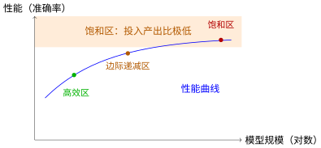
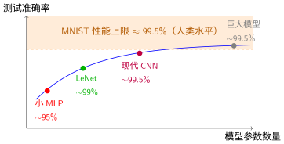

缩放定律#
实验对比：全连接 vs CNN中我们看到，CNN用61K参数达到98.9%准确率，比235K参数的全连接网络更好。这引出了一个深层问题：如果继续增大模型，性能会无限提升吗？
答案是否定的。现实世界中的资源总是有限的——计算时间、内存、数据量。理解缩放定律（Scaling Laws） [KMH+20]，帮助我们在有限资源下做出最优决策：用多大的模型？需要多少数据？投入更多计算值得吗？
从实验观察：收益递减#
回顾实验对比：全连接 vs CNN的性能对比：
模型 |
参数量 |
测试准确率 |
边际收益 |
|---|---|---|---|
全连接 |
235K |
97.8% |
— |
LeNet |
61K |
98.9% |
+1.1% |
如果我们继续增大LeNet（增加卷积核数量、层数），会发现一个规律：初期提升明显，后期趋于饱和。

性能随模型规模变化的典型曲线
三个区域：
高效区：增加参数带来显著提升（如从全连接到LeNet）
边际递减区：继续增大，提升幅度变小（如LeNet→更深的LeNet）
饱和区：再大的模型也几乎不提升（MNIST上>99%后再难进步）
这背后的原因是：引言中讨论的归纳偏置已经捕获了任务的主要结构，剩余的是噪声和偶然性，无法用更多参数消除。
缩放定律的数学形式#
研究表明，性能与模型规模、数据量、计算量之间存在幂律关系——这在自然界中普遍存在（如生物代谢与体重的3/4次方关系）。
模型规模缩放#
固定数据集时，损失随参数量的变化：
公式各部分含义：
\(L_{\infty}\)（不可约损失）：任务本身的难度下限。即使无限大的模型、无限多的数据，也无法突破。对MNIST来说，\(L_{\infty}\)对应约0.5%错误率（人类也会犯错）
\(A\)（幅度系数）：当前模型与最优的差距。小模型\(A\)大，大模型\(A\)小
\(N^{-\alpha}\)（缩放项）：增加参数带来的收益，呈幂律递减
\(\alpha \approx 0.05-0.1\)：收益递减的速度。\(\alpha\)越小，收益递减越快
具体例子（MNIST上的假设数据）：
模型规模 \(N\) |
损失 \(L(N)\) |
错误率 |
边际收益 |
|---|---|---|---|
10K参数 |
\(0.05 + 0.5 \cdot (10K)^{-0.07} \approx 0.12\) |
12% |
— |
60K参数 (LeNet) |
\(0.05 + 0.5 \cdot (60K)^{-0.07} \approx 0.09\) |
9% |
-3% |
600K参数 |
\(0.05 + 0.5 \cdot (600K)^{-0.07} \approx 0.07\) |
7% |
-2% |
6M参数 |
\(0.05 + 0.5 \cdot (6M)^{-0.07} \approx 0.06\) |
6% |
-1% |
60M参数 |
\(0.05 + 0.5 \cdot (60M)^{-0.07} \approx 0.055\) |
5.5% |
-0.5% |
为什么不是线性？
想象你在用积木搭建城堡：
前100块积木（小模型）：每增加一块都有明显作用——建地基、围墙、塔楼。边际收益高
第101-1000块（中等模型）：增加细节——窗户花纹、旗帜装饰。有提升，但不明显
第1000块以后（大模型）：增加微小的纹理、微调颜色。几乎看不出来变化
神经网络参数存在冗余——许多参数学习的是噪声或重复信息。随着规模增大，新增参数捕获的是越来越细微的模式，边际贡献自然递减。
数据规模缩放#
类似地，数据量的影响：
关键洞察：数据与模型需要匹配。
不匹配的后果：
场景 |
模型规模 |
数据规模 |
结果 |
原因 |
|---|---|---|---|---|
过拟合 |
1亿参数 |
1,000张图片 |
❌ 灾难 |
模型记住了所有样本，泛化能力差 |
欠拟合 |
1万参数 |
1亿张图片 |
❌ 浪费 |
模型容量不足，无法利用大量数据 |
平衡 |
60K参数 |
70,000张图片 (MNIST) |
✅ 合适 |
LeNet-scale匹配MNIST数据量 |
平衡 |
1亿参数 |
100万张图片 (ImageNet) |
✅ 合适 |
ResNet-scale匹配ImageNet数据量 |
数据效率曲线：
想象学习一个概念：
前100个例子：每多看一个例子，理解都有飞跃（从陌生到熟悉）
第101-1000个例子：巩固知识，发现边缘案例（从熟悉到精通）
第1000个以后： diminishing returns（从精通到专家，提升极小）
MNIST只有70,000张图片。即使模型再大，也无法突破数据本身的信息量上限——就像用望远镜看报纸，设备再好，信息来源有限。
计算最优配置#
实际中，我们需要同时决定模型规模\(N\)和数据量\(D\)。给定计算预算\(C\)（FLOPs，浮点运算次数），最优配置满足：
直观解释：为什么模型和数据都要增加？
想象你要学习一门语言：
只增加课本数量（只增大模型）：你买了10本教材，但每本只看1页——学不深入
只增加阅读时间（只增加数据）：你有无限时间，但只有1本教材——学不广博
平衡增加：课本数量和时间都增加——学得既深入又广博
具体场景示例：
假设你初始配置：60K参数模型 + 70K数据，训练1小时达到98%准确率。
计算预算 \(C\) |
最优模型规模 \(N_{opt}\) |
最优数据规模 \(D_{opt}\) |
训练时间 |
预期准确率 |
|---|---|---|---|---|
1× (基线) |
60K |
70K |
1小时 |
98.0% |
2× |
60K × 1.41 ≈ 85K |
70K × 1.41 ≈ 100K |
2小时 |
98.5% |
4× |
60K × 2 = 120K |
70K × 2 = 140K |
4小时 |
98.8% |
8× |
60K × 2.83 ≈ 170K |
70K × 2.83 ≈ 200K |
8小时 |
99.0% |
常见误区：
❌ 只增大模型：1000K参数 + 70K数据 → 严重过拟合
❌ 只增加数据：60K参数 + 700K数据 → 模型容量不足，欠拟合
✅ 平衡增加：按比例同步增加，获得最优性价比
MNIST上的缩放分析#
MNIST是一个"简单"任务——10类分类，图像清晰、对齐、标准化。这导致特殊的缩放特性：
饱和效应#

MNIST任务上的性能饱和
关键观察：
LeNet的61K参数已达到**99%**准确率
增大10倍到600K参数，可能只提升到99.3%（+0.3%）
再增大100倍，几乎不提升（接近人类水平99.5%）（+0.2%）
为什么会在99.5%饱和？
人类水平上限：MNIST数据集由人类标注，本身就包含约0.5%的标注噪声（模糊、难以辨认的数字）。模型再强，也无法超越数据质量
任务复杂度上限：10类手写数字识别是"简单"任务——类内变化小（都是数字0-9），类间界限清晰。不像ImageNet有1000类，或自然语言理解需要推理能力
归纳偏置已充分利用：引言中讨论的CNN归纳偏置（局部性、平移不变性、组合性）已经捕获了MNIST的主要结构。剩余的是随机噪声，无法用更多参数消除
具体数据对比：
模型 |
参数量 |
准确率 |
边际提升 |
投入产出比 |
|---|---|---|---|---|
简单MLP |
50K |
96% |
— |
基线 |
LeNet |
60K |
99% |
+3% |
极高 |
深层CNN |
600K |
99.3% |
+0.3% |
中等 |
ResNet-18 |
11M |
99.5% |
+0.2% |
低 |
ResNet-101 |
45M |
99.5% |
+0% |
无 |
这证明了LeNet-5架构详解中讨论的设计理念——好的归纳偏置比暴力堆参更有效。LeNet用60K参数达到99%，而增大750倍的ResNet-101也只能到99.5%（且最后0.5%主要是靠数据清洗和训练技巧，而非模型容量）。
从LeNet到现代架构：缩放的演进#
尽管MNIST上容易饱和，但缩放定律在更复杂任务（ImageNet、语言模型）中展现了巨大价值。回顾发展历程：
架构 |
年份 |
参数量 |
关键创新 |
缩放维度 |
|---|---|---|---|---|
LeNet |
1998 |
60K |
卷积+池化 |
深度（6层） |
AlexNet |
2012 |
60M |
ReLU+Dropout+GPU |
深度×宽度（8层） |
VGG |
2014 |
138M |
小卷积核堆叠 |
深度（19层） |
ResNet |
2015 |
60M |
残差连接 |
极深（152+层） |
EfficientNet |
2019 |
可变 |
复合缩放 |
深度×宽度×分辨率 |
演进规律：
深度缩放：更多层→更抽象特征（LeNet→AlexNet→VGG）
宽度缩放：更多通道→更丰富表示（同层内扩展）
复合缩放：深度、宽度、分辨率同时增加（EfficientNet）
关键洞察
现代大模型（GPT-4、Claude等）的成功，本质是缩放定律在极大规模上的验证：
千亿级参数（\(N\)巨大）
万亿级token（\(D\)巨大）
万卡级计算（\(C\)巨大）
但当任务简单时（如MNIST），引言强调的归纳偏置设计比盲目缩放更重要。
实践建议：如何应用缩放定律#
基于本章和前面章节的理解，给出具体建议：
1. 从小开始，逐步扩展#
步骤 |
行动 |
预期结果 |
|---|---|---|
1 |
用LeNet-scale模型（~100K参数）建立基线 |
了解任务难度 |
2 |
增加深度（+2层卷积） |
观察收益 |
3 |
增加宽度（通道数×2） |
观察收益 |
4 |
如果仍有提升，继续缩放；否则停止 |
找到饱和点 |
2. 监控缩放曲线#
记录实验数据：
参数数量 |
训练损失 |
验证损失 |
训练时间 |
|---|---|---|---|
60K |
0.02 |
0.03 |
30min |
120K |
0.015 |
0.025 |
55min （收益明显） |
240K |
0.012 |
0.024 |
100min （边际递减） |
480K |
0.011 |
0.024 |
200min （不值得） |
3. 数据与模型匹配#
数据少（<10K）：小模型+强正则化（参考神经网络训练基础）
数据适中（10K-1M）：中等模型，关注归纳偏置设计
数据海量（>1M）：大模型+大数据，遵循缩放定律
4. 考虑部署约束#
训练时可以用大模型，但部署时要考虑：
推理延迟：移动端要求<100ms
内存限制：嵌入式设备可能只有MB级内存
能耗：边缘设备的电池限制
总结：理论与实践的结合#
本章将实验对比：全连接 vs CNN的实验观察上升为理论理解：
概念 |
实验观察 |
理论解释 |
|---|---|---|
归纳偏置 |
CNN用更少参数更好 |
先验知识减少解空间 |
收益递减 |
增大LeNet提升有限 |
幂律缩放，\(N^{-\alpha}\) |
饱和效应 |
MNIST准确率接近99.5% |
任务难度存在下限\(L_{\infty}\) |
资源匹配 |
数据少时大模型过拟合 |
\(N\)与\(D\)需要平衡 |
核心启示：
好的架构设计（归纳偏置）比暴力堆参更高效
缩放定律帮助我们预测投入产出比
实际约束（数据、计算、部署）决定最终选择
下一步#
缩放定律回答了"模型该有多大"的问题，但深度学习的世界远不止于此。总结与展望将总结本章的核心启示，并展望更广阔的未来方向——从自动化架构搜索到轻量化部署，从多模态学习到联邦学习。
从"理解一个任务"进化到"理解一个领域"！
参考文献#
Jared Kaplan, Sam McCandlish, Tom Henighan, Tom B Brown, Benjamin Chess, Rewon Child, Scott Gray, Alec Radford, Jeffrey Wu, and Dario Amodei. Scaling laws for neural language models. arXiv preprint arXiv:2001.08361, 2020.
贡献者与修订历史
查看详细修订记录
-
b20ef3e2026-04-28 - Heyan Zhu: docs: update pytorch practice section with detailed explanations and code examples -
59126f42026-04-26 - Heyan Zhu: docs(math-fundamentals): update content structure and add citations -
cec393d2025-12-11 - Heyan Zhu: docs: partially complete migration and restructure course materials